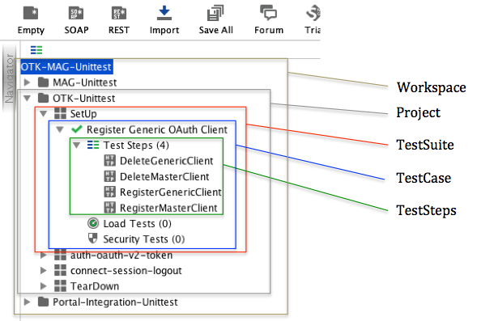
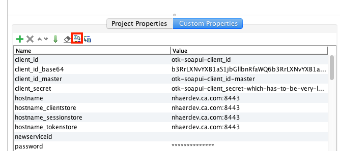
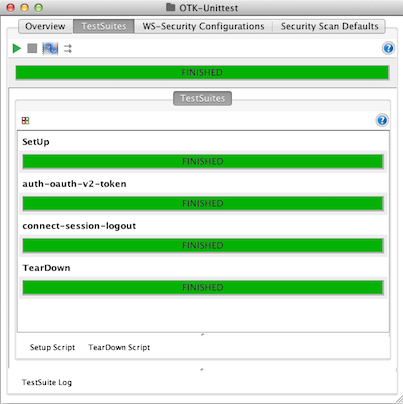

This guide shows how existing SOAPUI test can be used to test policies made for OTK and MAG. The idea is to get a good understanding how this works so that more test can be implemented. Certainly also for any policies.
The SOAPUI tests discussed here are built on top of SOAPUI 5.2.1. For more info on SOAPUI please refer to SOAPUI web site.
This how to guide explains the following:
For anybody who hasn't used SOAPUI, it is a tool that can be used to test API's. Any API implementing a SOAP or REST interface is preferred. SOAPUI can do functional tests just as load tests. SOAPUI tests can use hard coded parameters or parameters loaded from a properties file. Tests can be executed via the UI or on the command line.
For the existing OTK and MAG tests the following features were used:
The version of OTK used with these discussed SOAPUI tests is OTK-3.5.01 (SSG-9.2)
Before we go any further the following pre-requisites apply:
All SOAPUI tests use hardcoded properties and properties configured within a properties file. If OTK was installed without prefix and without modifying any API path not much has to be done. Do the following:
Now one policy in OTK has to be modified. This is to disable certificate based client authentication. This can be skipped if you have a private key in SOAPUI whose certificate can be authenticated on the gateway. If not, just do the following:
For now the UI will be used. Simply run SOAPUI and do nothing else for the moment. The first step is to open the provided SOAPUI workspace. You will find test suites for MAG included, this is just because it is simpler to maintain them together.
The following screen will be shown within SOAPUI:
For this section we will focus on executing all tests of a project. This includes all TestSuites! It is a very straight forward process:
Each top-level project (ie, MAG-Unittest, OTK-Unittest, etc) must first be configured with local properties. When the SOAPUI workspace
is initially loaded, each of these projects will be closed. Double-click the project name to open it. In the bottom left part of the SOAPUI window,
you will see the properties for the currently selected project. Click on the Custom Properties tab, then click the "Load Properties" icon, as
highlighted in the following screenshot: 
Navigate to the folder where the properties files are located
(typically ~/Gateway-SK-OTK/apitesting/soapui/properties) and select otk-mag-unittest.properties. Ensure the "Creates Missing Properties" setting is
checked and click OK. Next, do the same thing, but this time select the otk-mag-unittest-local-mine.properties file.
Repeat the custom properties loading for EACH project.
Note: After setting all custom properties, try selecting File-->Save All Projects to ensure that all projects can be saved. If you get an error
that suggests some file could not be found, right-click on the affected project and select "Save Project" - navigate to the folder where the project
file is located (typically ~/Gateway-SK-OTK/apitesting/soapui/project) and save in this folder to overwrite the existing file. By doing this,
you should be able to save all the projects on SOAPUI exit. This also ensures the projects are saved with your custom property settings
so that you don't have to repeat the above setup process again.
If everything went well you will see the dialog as below:
Here are examples on how we used groovy. Keep in mind that I have googled that stuff together so please do not ask me for details. Nevertheless those examples work:
| Description | Groovy script |
|---|---|
| Testing a HTTP response header using a script-assertion. 'x-ca-err' is the header we are looking for, '3003113' is the expected value |
def errorCode = messageExchange.getResponseHeaders()["x-ca-err"][0]
|
| Using regex to extract a value of response header and make value available via a variable. 'Grant' is a preceding test step. 'Location' is a HTTP header of the 'Grant' response. 'code' is later on used as variable. Use a 'transfer property' assertion to reference it. |
def location = testRunner.testCase.getTestStepByName("Grant").httpRequest.response.responseHeaders["Location"][0]
|
Creating a value as nonce. Here we simply use a timestamp. Afterwards we use a 'property transfer' test step and refer to 'CreateNonce.result' |
new Date().format("yyyy-MM-dd HH:mm:ss.SSS")
|
Here a list of tools that may be useful when building or testing policies:
| Description | Tool |
|---|---|
| A tool to base64 encode and decode values | base64 tool |